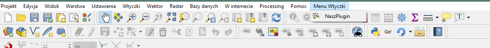
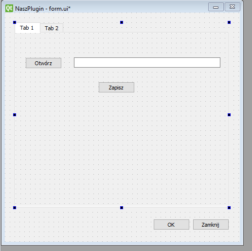

Moduł 7 - Własna wtyczka do QGIS (Część 2)#
Dziś kontynuujemy zagadnienie tworzenia własnego pluginu. Wykład obejmie zagadnienia:
Dodawania elementów interfejsu i ich oprogramowanie
Wykorzystanie funkcjonalności QGISa we własnej aplikacji
Jedna uwaga. Na górze wtyczki warto zaimportować wszystkie funkcjonalności QGISa, w razie gdyby coś wam nie działało upewnijcie się że na górze dodany został import:
from qgis.utils import *
from qgis.core import *
from qgis.gui import *
---------------------------------------------------------------------------
ModuleNotFoundError Traceback (most recent call last)
Input In [1], in <cell line: 1>()
----> 1 from qgis.utils import *
2 from qgis.core import *
3 from qgis.gui import *
ModuleNotFoundError: No module named 'qgis'
Umiejscowienie wtyczki w głównym oknie#
Obecnie nasz plugin jest już dostępny i jest otwieralny w środowisku QGIS. Dostępny jest jako ikonka na głównym pasku.
Możemy zmienić umiejscowienie wtyczki w QGIS i umieścić ją w rozwijalnym menu. Jest to zwłaszcza przydatne gdy chcemy dodać więcej niż jedno uruchamialne okno w ramach naszej wtyczki.
Do tego musimy (poza ikoną QAction) zdefiniować nowe menu QMenu:
self.menu = QMenu(self.iface.mainWindow()) #tworzymy nowy obiekt QMenu przypisany do głownego okna
self.menu.setTitle("Menu Wtyczki") #nadajemy nazwę menu
Teraz do menu możemy dodać naszą “Akcję” czyli ikonkę. W ten sam sposob możemy dodawać naszą aplikacją do już istniejących pasków rozwijalnych menu.
self.menu.addAction(self.action)
W tym momencie nasz pasek menu jeszcze nie został dodany do interfejsu QGIS, by to zrobić musimy wykonać dwa kroki:
menuBar = self.iface.mainWindow().menuBar() #pobrać referencję do głównego paska menu
menuBar.addAction(self.menu.menuAction())
#i metodą addAction dodać nasze nowe menu do menuBar
Pamiętamy o zmianie funkcji unload() by usuawała menu przy a nie ikonkę!
def unload(self):
self.menu.deleteLater()
del self.action
Teraz nasza wtyczka dostępna jest w nowym menu:
Rozwijanie interfejsu wtyczki#
Rozwińmy naszą wtyczkę. Dodajmy kilka nowych elementów:
TabWidget - zakładki.
W zakładce 1:
Dwa przyciski PushButton
I pole tekstowe LineEdit
W zakładce 2:
Jeden SpinBox
Jeden CheckBox
Nazwy pozostawiam domyślne, zmieniłem jednak tekst wyświetlany na elementach.

Oczywiście elementy można modyfikować - zmieniać nazwy, tekst, parametry, wszystko zależnie od klasy obiektu. Przyciski mogą być wyłączane i uruchamiane w zależności od wciśnięcia jakiegoś innego przycisku lub załadowania określonego pliku. SpinBox może mieć ustaloną domyślną wartość, być zwiększany za każdym kliknięciem o więcej niż 1 i tak dalej. Omówienie wszystkich funkcjonalności widżetów Qt jest zbędne, gdyż ich liczba jest naprawdę duża a w zależności od używanego widżetu w Qt Designer łatwo jest poznać i edytować parametry każdego elementu.
Istotne jest zaznaczenie, że parametry elementów które możemy zmieniać w Qt Designer, możemy też zmieniać w Pythonie używając tych samych nazw. Na przykład QWidget posiada parametr enabled (czyli czy widżet jest “klikalny”). W programowaniu wtyczki możemy odwołać się do tego przycisku i użyć na nim metody setEnabled by zmienić jego parametr w czasie działania wtyczki. Jeśli nie jest to jasne, to bez obwaw, później zobaczymy to na przykładzie.
Zapisujemy okno i pamiętamy o przełożeniu na interfejs Pythona (tak jak na ćwiczeniach)
Po przeładowaniu wtyczki zmiany są widoczne:

Przyciski nie wykonują jednak żadnej akcji bo takowej nie zaprogramowaliśmy!
Programowanie widżetów#
Zacznijmy od oprogramowania naszego przycisku “Otwórz”, jak się domyślamy, ma on pozwalać na otwarcie/wczytanie warstwy do QGIS.
Nasz przycisk ma domyślną nazwę pushButton co widać w pliku form.py

Działanie przycisków będziemy oprogramowywać w funkcji run().
Nasz intefrejs został już zapisany pod zmienną klasy self.form. Każdy widżet jest powiązany (dziedziczy) z intefejsem, więc będziemy używać odwołania self.form aby połączyć się z każym widżetem naszego interfejsu.
A zatem odwołanie do naszego przycisku to:
self.form.pushButton
Wykorzystując to odwołanie możemy wykonywać na nim opracje. Przykładowo zmienić tekst:
self.form.pushButton.setText("Otwieraj")
Efekt:

Dwie uwagi:
1.Kod należy wprowdzić przed metodą show(), bo metoda show() zatrzymuje wykonywanie kodu
2. Jako, że zmianę tekstu zaprogramowaliśmy w funkcji run, która jest uruchamiana przy otwarciu okna, zmianę widzimy od razu.
Uruchamanie funkcji za pomocą przycisksów#
Aby oprogramować działanie przycisku związane z akcją na nim wykonaną należy wykorzystać sformułowanie:
self.form.nazwa_widżetu.nazwa_sygnału.connect(self.nazwa_funkcji)
Strukturę tę już widzieliśmy na poprzednim wykładzie. Dla naszego przycisku będzie wyglądać tak:
self.form.pushButton.clicked.connect(self.otworz)
Czyli pushButton po wciśnięciu uruchomi funkcję otworz, którą musimy zaprogramować. Programujemy ją poniżej funkcji run().
Istnieje wiele innych sygnałów z których możemy korzystać. Clicked jest podstawowym dla przycisków, ale może to również być zmiana tekstu w polu tekstowym, zmiana wartości SpinBox itp.
Tworzymy zatem nową funkcję, która otworzy okno wyboru pliku.
def otworz(self):
sciezka = QFileDialog.getOpenFileName(self.window, "Otworz", "C:\\", '*.shp')
if QFileDialog.accepted: #jeśli okno zostanie zamknięte
pass #tu rób coś
QFileDialog to okno wyboru pliku, które zostanie otworzone przy wywołaniu tej funkcji. Wywoływana jest metoda getOpenFileName, która przekaże scieżkę do wybranego pliku do zmiennej “sciezka”.
Metoda getOpenFileName przyjmuje argumenty (obiekt nadrzędny (tu self.okno), nazwa okna, folder w którym ma się domyślnie otworzć i filtr (tutaj dowolny plik o rozszerzeniu shp).
Po przeładowaniu wtyczki możemy zobaczyć czy funkcja działa:

Oczywiście po wybraniu pliku nic się nie stanie. Należy oprogramować dodanie pliku z odczytanej ścieżki do projektu.
def otworz(self):
sciezka = QFileDialog.getOpenFileName(self.window, "Otworz", "C:\\", '*.shp')
if QFileDialog.accepted:
self.iface.addVectorLayer(sciezka[0], "plik", "ogr") #[0] bo pod [1] przechowywany jest jeszcze typ pliku
Wyświetlmy jeszcze tę ścieżkę do pliku w naszym widżecie LineEdit:
def otworz(self):
sciezka = QFileDialog.getOpenFileName(self.window, "Otworz", "C:\\", '*.shp')
if QFileDialog.accepted:
self.iface.addVectorLayer(sciezka[0], "plik", "ogr")
self.form.lineEdit.setText(sciezka[0]) #zmieniamy tekst w lineEdit

Oprogramujmy również nasz przycisk “Zapisz”. W funkcji run() musimy dodać uruchomienie nowej funkcji zapis. Skorzystamy z innego sygnału “released”, czyli okno uruchomi się dopiero po tym jak puścimy przycisk:
self.form.pushButton_2.released.connect(self.zapisz)
Analogicznie tworzymy funkcję zapisu. Zapisywana będzie aktywna warstwa:
def zapisz(self):
sciezka = QFileDialog.getSaveFileName(self.window, "Zapisz", "C:\\")
if QFileDialog.accepted:
QgsVectorFileWriter.writeAsVectorFormat(self.iface.activeLayer(), sciezka[0], "UTF-8")
Druga zakładka wtyczki#
Przejdźmy do drugiej zakładki. Oprogramujmy jeszcze nasz CheckBox i SpinBox, tak by każde kliknięcie CheckBox powodowało zwiększenie liczby w SpinBox o 1 i zwiększało jego rozmiar. Do dzieła!
Oprogramujmy kliknięcie CheckBox w run():
self.form.checkBox.clicked.connect(self.modyfikacje)
Następnie w połączonej funkcji dokonujemy zmian parametrów widżetów:
def modyfikacje(self):
self.form.spinBox.setValue(self.form.spinBox.value()+1)
self.form.spinBox.setGeometry(self.form.spinBox.x(),self.form.spinBox.y(),self.form.spinBox.width()+1, self.form.spinBox.height()+1)
W pierwszej linijce ustalamy wartość spinBox na podstawie jego obecnej wartości o podnosimy ją o 1
W drugiej linijce zmieniamy geometrię obiektu. setGeometry przyjmuje argumenty (pozycja x, pozycja y, szerokosc, wysokosc). Pobieramy je z obecnych wartości a szerokość i wysokości zwiększamy o 1. W rezultacie:

W sumie nasz kod wyglądania obecnie tak:
from qgis.PyQt.QtGui import *
from qgis.PyQt.QtWidgets import *
from qgis.utils import *
from qgis.core import *
from qgis.gui import *
from .form import Ui_Okno
def classFactory(iface):
return NaszPlugin(iface)
class NaszPlugin:
"""To klasa naszego pluginu"""
def __init__(self, iface):
"""
Inicjalizacja
:param iface: QgisInterface
:return:
"""
self.iface = iface
def initGui(self):
self.action = QAction(QIcon("""C:\\Users\\kamil\\AppData\\Roaming\\QGIS\\QGIS3\\profiles\\default\\python\\plugins\\plugin\\icon.png"""),"NaszPlugin",self.iface.mainWindow())
self.menu = QMenu(self.iface.mainWindow())
self.menu.setTitle("Menu Wtyczki")
self.menu.addAction(self.action)
#self.iface.addToolBarIcon(self.action)
self.action.triggered.connect(self.run)
menuBar = self.iface.mainWindow().menuBar()
menuBar.addAction(self.menu.menuAction())
def unload(self):
self.menu.deleteLater()
del self.action
def run(self):
self.window = QDialog()
self.form = Ui_Okno()
self.form.setupUi(self.window)
self.form.pushButton.setText("Otwieraj")
self.form.pushButton.clicked.connect(self.otworz)
self.form.pushButton_2.released.connect(self.zapisz)
self.form.checkBox.clicked.connect(self.modyfikacje)
self.window.show()
def otworz(self):
sciezka = QFileDialog.getOpenFileName(self.window, "Otworz", "C:\\", '*.shp')
if QFileDialog.accepted:
self.iface.addVectorLayer(sciezka[0], "plik", "ogr")
self.form.lineEdit.setText(sciezka[0])
def zapisz(self):
sciezka = QFileDialog.getSaveFileName(self.window, "Zapisz", "C:\\")
if QFileDialog.accepted:
QgsVectorFileWriter.writeAsVectorFormat(self.iface.activeLayer(), sciezka[0], "UTF-8")
def modyfikacje(self):
self.form.spinBox.setValue(self.form.spinBox.value()+1)
self.form.spinBox.setGeometry(self.form.spinBox.x(),self.form.spinBox.y(),self.form.spinBox.width()+1, self.form.spinBox.height()+1)
W tym momencie powinniście być w stanie oprogramować komunikację między widżetami wtyczki.